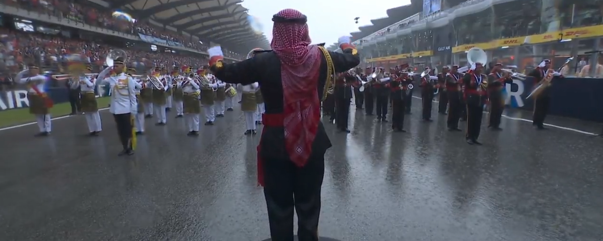
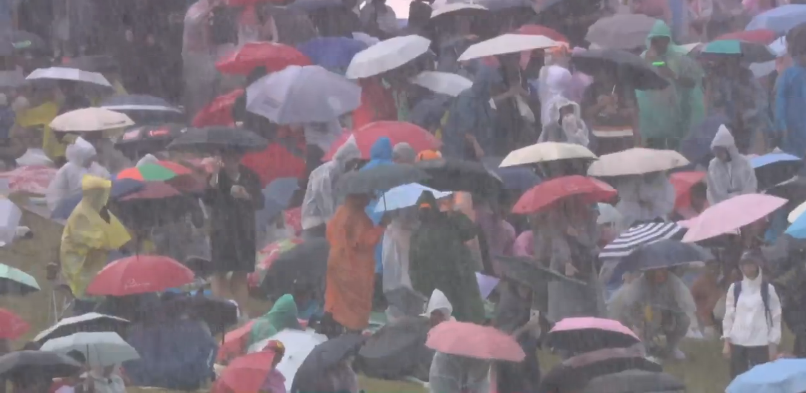

경기 10분전 비 존나옴


경기 10분전 비 존나옴
막스는 웃고있다
실제로 우승까지 함 ㅋㅋ
이대로 세이프티카 앞세워서 몇 바퀴 돌리고 경기 종료~
21스파의 악몽…
개꿀잼서킷 ㅋㅋ 마드링 꺼져
왜 지옥인지 설명좀 미끄러운거 때문인가
당연
비가 안오는 상태에서 해가 바로 떠버리면 레코드라인은 차들이 많이 다니니까 금방 말라버리고 추월라인은 차들이 잘 안다니니까 젖어있는 상태로 오래 유지됨
마른 노면에서는 타이어 뜯겨나가는게 중계화면으로 잡힐 정도로 취약한 레인타이어를 끼우자니 레코드라인에서 버벅거리고, 슬릭타이어 끼우자니 레코드라인에서는 괜찮은데 추월라인에 찍먹만 해도 김연아 전성기마냥 차가 돌아버리니까 추월을 못하고....
그래서 어제 스타트때 슬릭타이어 선택한 차들 전부 최하위권으로 밀려남(페라리 두대 포함 ㅋㅋ)
결국 시간이 지나면서 세팡 특유의 배수능력+햇빛버프 받고 금방 말라버려가지고 한 10랩쯤부터 전부 슬릭타이어 끼우고 나오긴 함
그리고 어제 비때문에 딜레이된건 40분정도밖에 안됨. 근데 포메이션랩 돌다가 차 여러대(특히 페라리 엔진 차들)가 가속을 못하는 현상 발생 -> 폭우로 인한 소프트웨어 문제가 발생해서 이것때문에 1시간 추가로 딜레이된게 더 문제였음
f1은 기본적으로 타이어에 트레드 없는 타이어를 쓰는데 저래버리면 전략적으로 우천용 타이어를와 마른노면용 타이어를 경기 중간에 교체해야 되고 비가 온 노면에서 시속 200~300을 왔다갔다 하기 때문에 프로선수라도 미끄러지고 난리남
우당탕챌린지
시야 안보일텐데 걍 하나?
바레인 그랑프리 끝난거 아녀?
어제했는데 무슨
어제 글이기 때문에
나한텐 8분전으로 보임
난 12분
뚜뚜뚜두!!막스!!베르스타펜!!
기다리는게 빡셌지만 존잼이었음
마드링 빼고 걍 내년부터 세팡가자
개꿀잼대기중